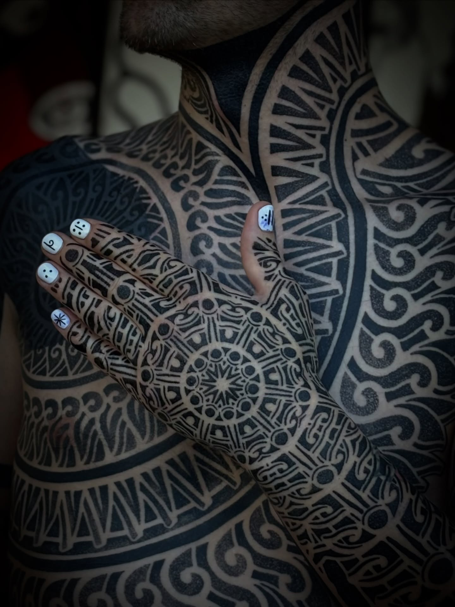
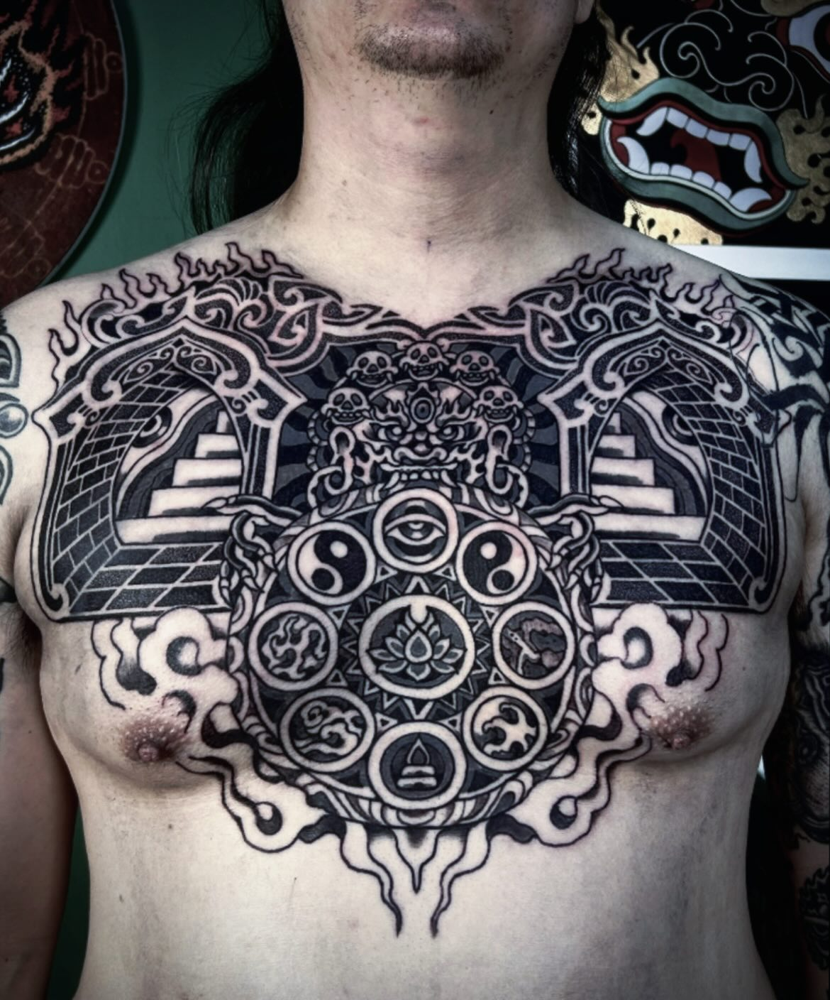
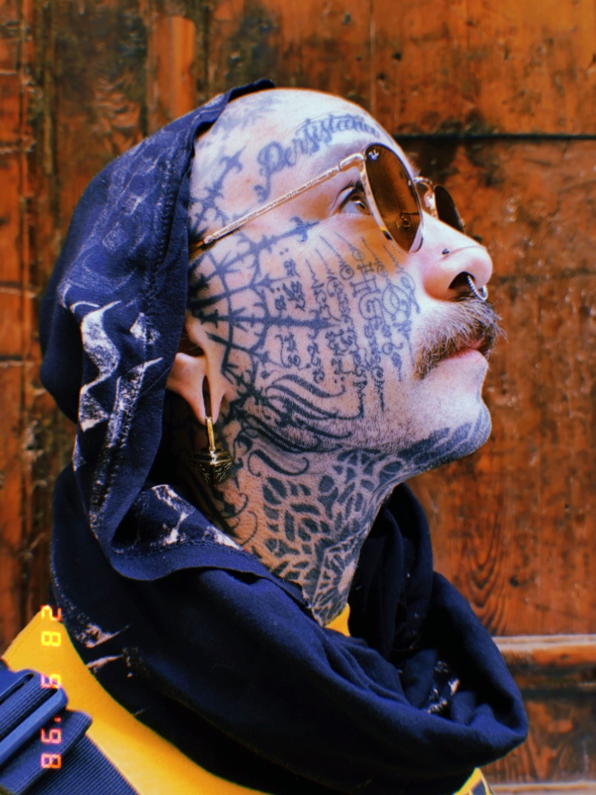
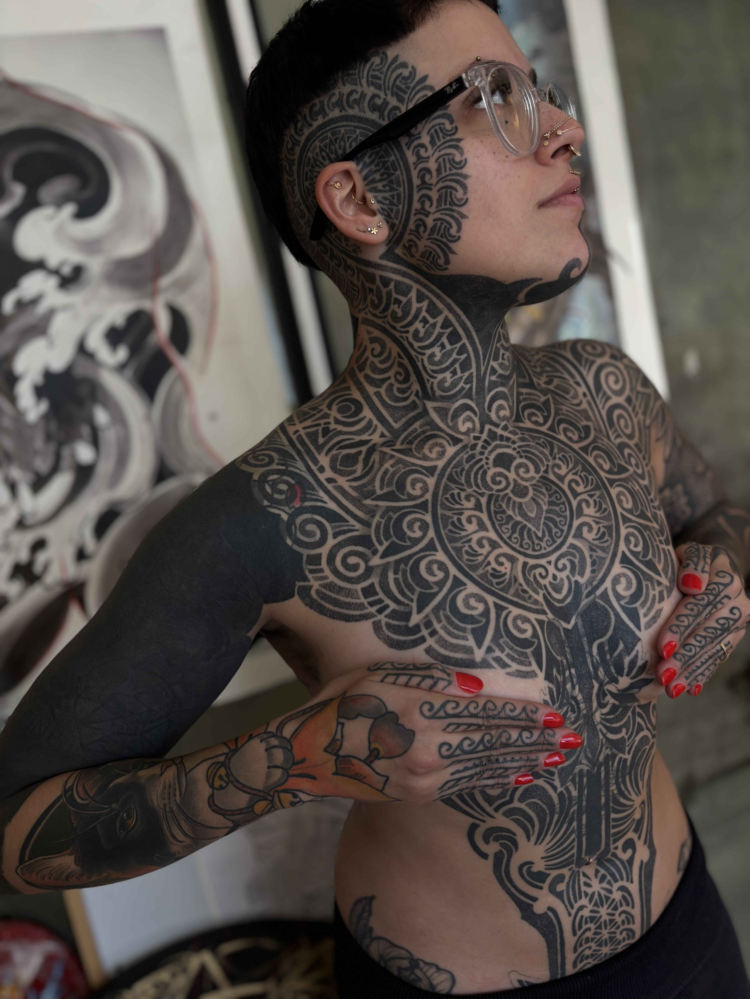
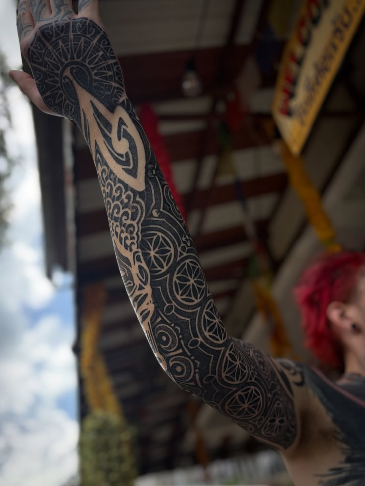

A long conversation with Israel Paketh
On architecture as tattoo language, dotwork and repetition, negative space as active design, the asymmetric body, ritual, and what comes next.
"El tatuaje no debe ser simétrico, debe verse simétrico. Esa frase cambio mi percepción de como afrontar este desafío."
Q.01Sobre la arquitectura como lenguaje del tatuaje — ¿Estás pensando en el cuerpo como un edificio?
Tengo estudios y experiencia en Arquitectura y mis trabajos estan super influenciados por Ornamentos y decoraciones arquitectonicas, pero no veo el cuerpo como un edificio. Para mi el cuerpo es algo vivo y con movimiento, donde el desafio es hacer lucir un diseno simetrico o estructurado, en un cuerpo asimetrico y que cambia con cada persona. Cuando trabajo en mis disenos me veo influenciado por la arquitectura y sus diferentes niveles, formas y tamanos. Siempre buscando usar la anatomia humana como guia y referencia.
Q.02Sobre Dotwork y la Disciplina de la Repeticion — ¿Esa repeticion se convierte en un estado de trance?
Mi tecnica de dotwork no es siempre tan individual, es mas una textura que un puntillismo individual, ademas cada vez mas me tiro al impacto del alto contraste entre negro solido y piel.
Para mi en particular el momento del stencil es el momento donde mi mente entra en un estado mas de disociacion del entorno o "trance" y en algunos momentos del tatuaje tambien siento cierto estado "meditativo" pero no todo el tiempo, estoy tambien atento al cliente y a como esta llevando el dolor y la experiencia, para mi es una experiencia compartida y trato siempre de compartirla con la persona que estoy tatuando.
Q.03En el espacio negativo como diseno activo — como decides donde va la tinta?
Gran pregunta! Creo que hay algo muy fundamental en entrenar el gusto personal y el "ojo" donde uno entiende las proporciones y el balance entre la cantidad de piel y la cantidad de negro con solo ver el diseno. Para mi trabajo y gusto personal, creo que los espacios negativos funcionan extremadamente bien cuando hay un equilibrio y un balance deliberado en las proporciones generales de la composicion entre piel y tinta, usando trazos o lineas de piel que sean proporcionales entre si, un ejemplo es que los tamanos de lineas sea proporcional entre si: La linea fina de negativo tiene un tamano de 1/4 de la linea gruesa, por ejemplo. Eso le da una intencion "oculta" a mi trabajo y una consistencia entre todos mis trabajos independientemente de los proyectos.

Para mi el tatuaje es un proceso de transformacion, de transmutacion. Y no es solo para la persona que se lleva el tatuaje, lo es para mi tambien como tatuador.
Q.04En el cuerpo como un lienzo asimetrico — como concilias la precision geometrica con la topografia irregular?
"El tatuaje no debe ser simetrico, debe verse simetrico" esta frase me la dijeron en mis primeros pasos en el tatuaje y cambio mi percepcion de como afrontar este desafio.
Busco adaptar mis disenos a la persona, inclusive viendo el cuerpo primero para que el mismo cuerpo me guie hacia donde llevar el diseno y si realmente seria estetico hacer un diseno simetrico o uno asimetrico para esa persona. Para mi esa es la magia del tatuaje a gran escala, un "baile" entre cada cliente, su cuerpo intenciones y referencias, y por el otro lado, mi vision artistica del tatuaje que se puede lograr.
Q.05Sobre el ritual de la sesion — Que hace ese ritual? Como te transforma?
Para mi el tatuaje es un proceso de transformacion, de transmutacion. Y no es solo para la persona que se lleva el tatuaje, lo es para mi tambien como tatuador. El tatuaje como tal es un arte, un ritual de miles de anos y nosotros tenemos el privilegio de hacerlo en este tiempo "moderno". Creo que no hay que olvidarse del lado mas intimo del tatuaje y entender de alguna manera cuales son las intenciones de la persona que viene a buscarme como su tatuador. Esa informacion que va mas alla de los "gustos" o "preferencias" en cuanto al diseno, son a veces mas valiosas por que te guian desde un lado mas sutil y asi grandes ideas o nuevas propuestas vienen a la mente cuando podes entender la intencion emocional o mental que la persona quiere volcar en el tatuaje que se esta haciendo. Para mi es un privilegio ser parte de ese proceso y yo me veo transformado en cada tatuaje que hago, es parte fundamental de mi propio camino interior en mi vida.
From the archive



Q.06En relaciones de larga duracion con los clientes — que hace que un cliente se quede tanto tiempo?
Mis clientes me eligen por la conexion personal, humana y que como consecuencia en algunos casos, llevan a una amistad, la cual trasciende lo artistico para hacer que lo artistico se vea muy potenciado.
Conectar y escuchar, compartir y entender a mis clientes permite que el proyecto sea algo para la vida y no solo para el cuerpo o para la estetica.
Soy muy agradecido de mis clientes y amigos, como Aaron, DY, Omar y tantos otros que viajan miles de kilometros para seguir conectando, confiando y compartiendo conmigo esta fantastica experiencia que es el tatuaje, son increibles!!
Q.07En Buenos Aires y el escenario global — como se diferencia la cultura del tatuaje en Argentina?
Buenos Aires es un lugar muy especial para mi, hice base en Tailandia por algunos anos y fue increible, pero no hay lugar como el hogar.
En cuanto a la escena del tatuaje aqui en Argentina, la gente se tatua mucho y proyectos muy grandes y jugados, como caras cabezas y cuerpos enteros. Hoy en dia hay mucho nivel en todos lados del mundo, cada artista con una impronta diferente por q vienen de lugares distintos, pero con un nivel muy alto de expresion artistica. Yo disfruto mucho de los artistas que proponen cosas distintas, que rompen con lo que ya esta afianzado y lo llevan a un nuevo nivel. Mas alla de Argentina, en el mundo del tatuaje hoy en dia hay mucha repeticion de lo que ya funciona. Viajando tanto logre conectar con grandes artistas, conocidos o desconocidos, que tratan de hacer algo diferente e ir mas lejos de sus propios limites en lo que hacen, y eso tambien pasa en Argentina donde hay artistas de nivel internacional.

Q.08Sobre la joyeria como una extension del trabajo — que te atrio al metal?
La joyeria surgio como una necesidad de hacer algo en otro medio que no sea el tatuaje o la pintura, desde otro lugar y usando otras "pasiones" que tengo como el estudio de cuestiones ancestrales o de ocultismo e iniciacion como Egipto, Sumer, Esoterismo, Hermetismo, chamanismo y mas.
El proyecto humildemente trata de imbuir las joyas con una forma Piramidal que esta presente en casi todos los sitios ancestrales al rededor del mundo y que esconden un conocimiento simbolico diluido por el paso del tiempo, pero presente y muy necesario en estos tiempos que corren.
Trabajar en otro medio y abordandolo desde otra perspectiva fue muy nutritivo en toda mi vida, tanto artisticamente como interiormente.
Q.09Sobre lo que viene despues — que tatue aun no hayas hecho te gustaria disenar?
Aunque tengo bodysuits en proceso, todavia no termina ningun cuerpo entero y eso seria algo increible y mas aun si el diseno fuese sobre alguna cultura ancestral iniciatica con los simbolismos y ornamentos de dicha cultura, hacer varios body's asi, seria mi meta a cumplir en los proximos anos.
Recorded Spring 2026 · Buenos Aires
{kind=link}
{kind=link}
{kind=link}
{kind=link}